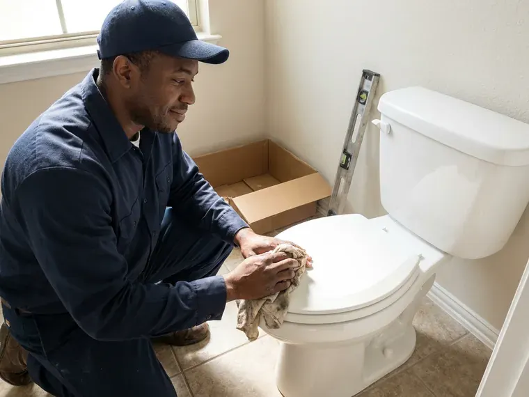
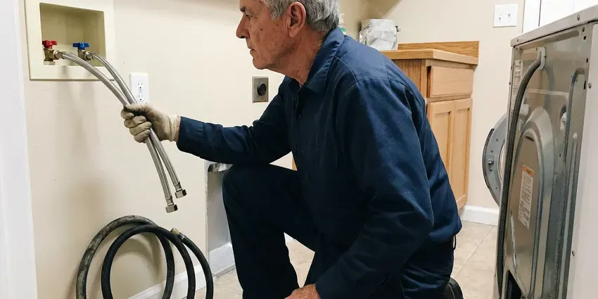

Gas Line Repair in South Hill, WA
Licensed gas line repair in South Hill, WA for buried yard lines, appliance connectors and interior piping, with pressure testing on every job.
- Certified Technicians
- Upfront Pricing Every Time
- Safety First
- Pressure Tested to Code

Stop Gas Leaks Fast With Licensed Repair in South Hill, WA.
If you smell gas, leave the house and call your gas utility, then call us for the fix.
Your Local Choice for Gas Line Repair in South Hill, WA
FHN Plumbing provides complete gas line repair services for residential and commercial properties throughout South Hill, WA. From minor leaks to major line replacements, our certified technicians are equipped to handle all types of gas piping problems with precision and safety.
Our expertise includes:
- Upgrading and rerouting gas lines.
- Electronic leak detection on meters, risers, yard lines and appliance connections
- Installation of new gas lines for appliances.

Additional Plumbing Maintenance Services in South Hill, WA
Our maintenance and specialty plumbing services in South Hill, WA protect your home year-round and extend the life of every system.


Customers
Why Choose FHN Plumbing for Gas Line Repair in South Hill, WA?
At FHN Plumbing, we understand the serious nature of gas line repairs and prioritize your safety above all else. Our team is trained in the latest safety protocols and uses advanced equipment to make sure every job is completed correctly.
- Prompt Service, We respond fast to gas line emergencies, understanding the urgency of these situations.
- Code Compliant, Every repair meets the fuel gas code and is pressure tested before service is restored.
- Certified Technicians, Our plumbers are highly trained and licensed to work on all types of gas piping systems.
Citywide Coverage
Our commitment extends across all of South Hill, providing fast and professional gas line repair services to all residents. We're familiar with the varied housing stock in the area and adapt our solutions to fit your particular needs.
Experienced Team
Our technicians have repaired and installed gas piping for years and know the fuel gas code inside and out. They are experienced with black iron, CSST brands like TracPipe and Gastite and polyethylene yard pipe.
Safety-First Approach
We utilize specialized tools and procedures to safely isolate and repair gas leaks, ensuring that every connection is secure and tested for integrity. FHN Plumbing is committed to delivering gas line services that meet the highest safety standards in South Hill, WA.
Trusted Certified South Hill Plumbing Services Professionals
At FHN Plumbing, we take pride in providing certified plumbing services throughout South Hill, WA. Backed by recognized industry credentials, our experienced plumbers combine technical skill with genuine customer care. Whether it is repair, installation, or maintenance, we follow strict safety and quality standards to deliver long-lasting results you can trust.
Call Us Now PHCC Plumbing Contractor Recognition
PHCC Plumbing Contractor Recognition Better Business Bureau (BBB) Accreditation
Better Business Bureau (BBB) Accreditation Angi Certified Pro
Angi Certified Pro ISO 9001 Quality Management Certification
ISO 9001 Quality Management CertificationReliable Gas Line Repair Services in South Hill, WA
Black Iron Pipe Repair in South Hill, WA
Many older homes in South Hill, WA use black iron pipes for gas lines. While durable, these pipes can corrode over time, especially at joints, leading to leaks. Our team is expert in repairing and replacing sections of black iron pipe, ensuring secure, threaded connections and applying appropriate pipe sealant for a leak-free system. We also check for proper grounding and bonding to prevent electrical corrosion.

Cost of Gas Line Repair in South Hill, WA
The cost of gas line repair in South Hill, WA can vary a great deal depending on the nature and extent of the damage. Minor repairs, like fixing a loose fitting or replacing a small section of exposed pipe, might range from $250 to $700. More complex issues, such as extensive underground pipe replacement or repairs requiring significant excavation, could cost between $1,000 and $5,000 or more. We always provide a clear, upfront estimate after a thorough inspection.
Cost-Effective Gas Line Repair Solutions in South Hill, WA
We understand that gas line repairs can be an unexpected expense. FHN Plumbing strives to provide cost-effective and transparent solutions for residents in South Hill, WA. We offer detailed estimates before any work begins, outlining the scope of repair, materials, and labor. Our goal is to provide durable repairs that prevent future issues, saving you money in the long run while protecting your safety.
Emergency Gas Line Repair in South Hill
Gas leaks are emergencies that require prompt attention. FHN Plumbing offers emergency gas line repair services in South Hill to address urgent situations quickly and safely. Our rapid response team is equipped to handle critical gas line failures, working efficiently to isolate the leak, perform the necessary repairs, and restore safety to your home, often coordinating with the local gas utility as needed.
Gas Line Repair Costs in South Hill, WA
Simple connector or fitting repairs often cost $150 to $450. Replacing a section of interior pipe typically runs $400 to $1,200, while buried yard line replacement can range from $1,000 to $4,000 or more depending on length and digging conditions. Rocky or hard-packed soil can add labor. We give you a firm written price before we start.
Gas Line Relocation & Upgrades in South Hill, WA
Renovating your home or adding a new gas appliance in South Hill, WA might require relocating or upgrading your existing gas lines. Our plumbers can safely extend or reroute gas lines to fit new layouts, ensuring proper sizing for increased demand and compliance with all current building codes. This often involves calculating BTU requirements for new appliances and selecting the right pipe diameter.
Gas Appliance Line Installation & Repair in South Hill, WA
Whether you're installing a new gas range, dryer, water heater, or outdoor grill, proper gas line connection is crucial. FHN Plumbing provides professional installation and repair of gas lines specifically for appliances. We ensure correct sizing, secure connections, and code-compliant shut-off valves. If your existing appliance line is leaking or damaged, our technicians in South Hill, WA can quickly diagnose and fix the problem, restoring safe operation.

Gas Appliance Line Repair in South Hill, WA
Your gas furnace, water heater, stove, or dryer relies on a working gas line. If you notice issues with a specific appliance, the problem might be with its dedicated gas line. We repair or replace faulty appliance connectors, shut-off valves, and flexible supply lines, making sure all connections are tight and that the correct size and type of line are used for proper appliance performance and safety in South Hill, WA.
Gas Line Repair Near Me in South Hill, WA
If you need gas line repair near me quickly, FHN Plumbing has licensed plumbers working in South Hill every day. Our trucks are stocked with detectors, pipe and fittings. Most leaks are found and fixed in a single visit.
Our local presence means we can respond fast to your gas line repair needs anywhere in South Hill, WA. We pride ourselves on being accessible and offering personalized service that larger, non-local companies cannot match. Trust FHN Plumbing to be your local, expert gas line repair partner.
FHN Plumbing at a Glance
- Fully licensed plumbing team covering South Hill, WA
- Same-day appointments and 24/7 emergency response
- Upfront, flat-rate pricing before work begins
- 4.9-star rated by 382+ Washington customers
South Hill Map
South Hill Information
- Population
- 64,708
- Area codes
- 253/360/206
- Service area
- South Hill and communities within 40 miles
- Nearby
- Lakewood, Tacoma, Auburn, Federal Way
Decades-old buried steel gas lines and damp soil lead to corrosion leaks in South Hill, WA, so fast licensed repair keeps families safe.
Expert Services
Trust our professionals for reliable FHN Plumbing solutions in South Hill, WA.
Our Specialized Plumbing Services in South Hill, WA
At FHN Plumbing, we provide a complete range of plumbing services across South Hill, WA. From leak detection to full system installations, our team ensures fast, precise, and affordable service for both residential and commercial properties. Explore our core services below:


South Hill plumbing repair specialists


How Our Gas Line Repair Process Works in South Hill, WA
FHN Plumbing follows a clear, step-by-step process for all gas line repairs, guaranteeing safety and adherence to all local codes.
Request a Quote
Call (425) 491-3131 after you have reached safety and contacted your gas utility if you smell gas. We dispatch a licensed plumber as quickly as possible.
Locate and Repair
We test the system to find the leak and explain the repair options. After your approval, we replace the damaged pipe or fittings to current code.
Test and Restore
We pressure test the repaired system and arrange inspection when needed. Then we help restore service and relight your appliances.
Frequently Asked Questions About Gas Line Repair in South Hill
The cost for gas line repair in South Hill, WA can range from approximately $250 for minor fixes to $5,000 or more for extensive replacements or repairs requiring excavation. Factors like the leak's location, accessibility, and the type of piping influence the final price. We provide transparent, upfront estimates after a thorough assessment.
Leave the building right away, do not use switches or flames and call your gas utility or 911 from outside. Once the utility makes it safe, call us for the fix.
No, gas line repairs should never be attempted by an untrained individual. Working with gas lines is extremely dangerous due to the risk of explosions, fires, and carbon monoxide poisoning. Always hire a licensed and qualified professional like FHN Plumbing for any gas line work.
Absolutely not. Gas line repair is extremely dangerous and should only be performed by licensed and certified professionals. Incorrect repairs can lead to serious gas leaks, explosions, fires, and carbon monoxide poisoning. Always call a professional like FHN Plumbing.
While there isn't a strict annual requirement for gas line inspections, it's a good practice to have your gas lines checked by a professional every few years, especially if your home is older or if you notice any changes in appliance performance. Regular maintenance can catch small problems before they become major problems.
Yes, most gas line repairs and all new installations in South Hill, WA require permits from the local building department. This means the work is inspected and meets all safety and code requirements. FHN Plumbing handles all necessary permitting and coordination with inspectors for you.
Utilities lock the meter when they find a leak or failed pressure test. A licensed plumber must repair the issue and pass a test before service is restored.
Our technicians are experienced with all common types of gas piping found in Washington homes, including traditional black iron pipe, copper gas lines, and Corrugated Stainless Steel Tubing (CSST). We use the right tools and techniques for each material to deliver a safe and durable repair.
What People Are Saying About Our Plumbing Experts?
Daniel K.
A pipe burst at 11 pm and they actually answered. The plumber showed up within the hour, shut everything down, and had us back to normal the next morning. Could not ask for more.
Emergency Plumbing · Federal Way, WA
Laura S.
I scheduled a water heater replacement, and the team made the process smooth and affordable. The new unit works perfectly, and they cleaned up after completing the job.
Water Heater Replacement · Auburn, WA
Emily R.
I called FHN Plumbing for plumbing repair, and the technician was fast, polite, and thorough. They explained the problem clearly and fixed it the same day. I will definitely hire them again. Highly recommended!
Plumbing Repair · Federal Way, WAJames P.
Our commercial plumbing system had a leak under the sink, and FHN Plumbing handled it professionally. The plumbers arrived quickly and restored everything without disruption to our customers.
Commercial Plumbing · Tacoma, WARobert G.
The trenchless sewer replacement saved our front yard. They walked us through the camera inspection footage first so we knew exactly what we were paying for.
Sewer Line Replacement · Lakewood, WA
Patricia H.
We had a slab leak that two other companies could not find. FHN Plumbing located it in under an hour, explained our options, and the price matched the quote to the dollar.
Slab Leak Repair · Lakewood, WA